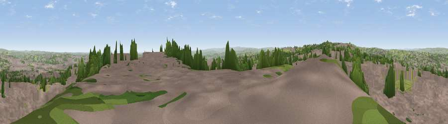

Viewpoint near Shelf
#13593 in England · top 17% of its area beats it · near ShelfWhere it is
The exact computed spot (SE 10925 28325). Click the marker for map links.
The view, rendered

A 360° render of this exact spot computed from the terrain model, tree cover and land cover — summer colours, afternoon light, calibrated against photographs of famous viewpoints. Real trees, hedges and buildings will differ in detail.
The panorama
Grey silhouette: terrain skyline in each direction (720 bearings, Earth curvature and refraction included). Dashed green: skyline with trees (+15 m) and buildings (+8 m) as obstacles. Blue strip: how far the ground is visible on each bearing.
Where the view opens
Wedge length = distance to the farthest visible ground on that bearing (vegetation-aware). Rings at 10, 25 and 50 km.
What fills the view
62% grassland · 23% woodland · 9% built-up · 6% cropland
Angular shares of the visible panorama (visual magnitude), not map area. Landscape diversity 0.44 (0–1 Shannon).
Key numbers
More beautiful places nearby
The staircase of upgrades: each row has a higher view potential than everything closer. Driving times are estimates from straight-line distance, calibrated against real road routing — check an actual route before setting out.
| Place | Direction | Drive | Score |
|---|---|---|---|
| Viewpoint near Stump Cross | SW · 2 km | ~5 min | 67.8 |
| Viewpoint near Stump Cross | WSW · 2 km | ~6 min | 71.5 |
| Rawdon Billing | NE · 16 km | ~28 min | 72.7 |
| Viewpoint near Otley | NNE · 18 km | ~32 min | 77.5 |
| Darwen Hill | W · 43 km | ~63 min | 80.7 |
| White Brow | WSW · 47 km | ~68 min | 82.9 |
| Warton Crag | NW · 76 km | ~100 min | 83.2 |
| Beacon Hill | NNE · 79 km | ~103 min | 84.7 |
53.75118, -1.83580 · source: screening · position refined by local search. Computed location — check access rights before visiting.